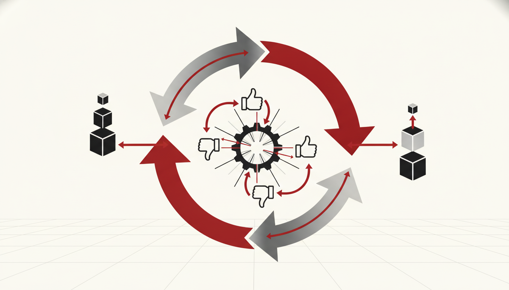

01 — The goal
Make enterprise intelligence effective.
Our goal is to ship agents that finish work inside Microsoft 365 — composed from Intent to Governance, grounded in SharePoint and Graph, steered by human preference, and measured by outcomes rather than conversation volume.
We are not chasing a model that can discuss everything. We are shipping agents that can do the next useful thing — under identity, policy, and audit — then get better from the people who correct them.
02 — The estate is already a workbench
The machinery is already running.
Enterprises already own identity that knows who may see what; SharePoint and Graph that hold the corpus of real work; Copilot as a surface people already open; Copilot Studio and Agent Builder to compose behaviour; Microsoft Foundry to host, evaluate, and govern; Purview and Scout to watch for drift and overreach.
What is missing is not another chatbot. What is missing is a discipline: treat agents as production systems with feedback loops — not demos with personality.
Chat is a door. Effectiveness is what walks through it.
03 — Decorative vs effective
Stop mistaking the pane for the work order.
Too many programmes stop at a familiar shape: a conversation pane sitting on institutional knowledge. Users ask. The bot answers. Someone still copies the answer into the form, the ticket, the policy pack, the approval chain.
That is decorative intelligence — useful for discovery, weak for delivery.
| Decorative intelligence | Effective agent |
|---|---|
| Answers in a pane | Completes a step in the workflow |
| Context is whatever fit in the prompt | Grounding is SharePoint, Graph, and permissions |
| Success = fluent reply | Success = task completion + audit trail |
| Feedback buried in a log | Preference loops that retrain and re-steer |
| Governance = hope | Foundry, Purview, Scout, eval sets |
Conversation was never the unit of value. Outcomes are.
04 — Preference as signal
Human preference is not a crutch. It is the signal.
A common critique says human-in-the-loop feedback produces chatty systems that need babysitting forever. In the enterprise, that critique misses the asset.
Human preference grounded in real work is not a bug — it is the training signal.2
When a knowledge worker thumbs down a SharePoint agent’s draft, corrects a classification, or escalates a borderline approval, they are labelling the only dataset that matters: what good looks like here, under these policies, in this tenant.
Preference. Correction. Escalation. Eval sets. Agents that cannot be corrected cannot be trusted. Agents that are corrected and never learn are theatre. Effective agents close the loop.

05 — Governed enough to scale
Rails strong enough to fund the next layer.
You let a component run unattended if it is reliable. You only build on top of it if it is trustworthy. Permissions and sensitivity labels bound what grounding can see. Copilot Studio and Agent Builder bound what actions can fire. Foundry binds models, tools, and evaluations. Purview binds retention, DLP, and audit. Scout binds visibility at estate scale.
We call this governed emergence: capability grows inside rails strong enough that leaders will fund the next layer.3
06 — Three moves
Compose. Instrument. Measure.
-
Compose on the stack you already own
Start with Intent → Agent → Grounding → Action → Feedback → Governance. Map every agent to Microsoft products in the estate. Prefer SharePoint agents and Copilot surfaces over orphaned web UIs.
-
Instrument preference as production data
Treat every thumbs-up, correction, and escalation as first-class telemetry. Build eval sets from failures. Calibrate confidence so “I’m unsure” routes to a human before “I’m fluent” invents a policy.
-
Measure effectiveness, not engagement
Report task completion, time-to-outcome, escalation rate, and confidence calibration. If the metric board only shows message counts, you are funding chat theatre. See Insights, Choice, and Measurements.
Closing
The age of decorative copilots is ending.
The organisations that win will not be those with the wittiest system prompt. They will be those whose agents ship work, under governance, improved by the people who know the work.
That is our goal: effective agents.
Ship Outcomes, Not Chat.